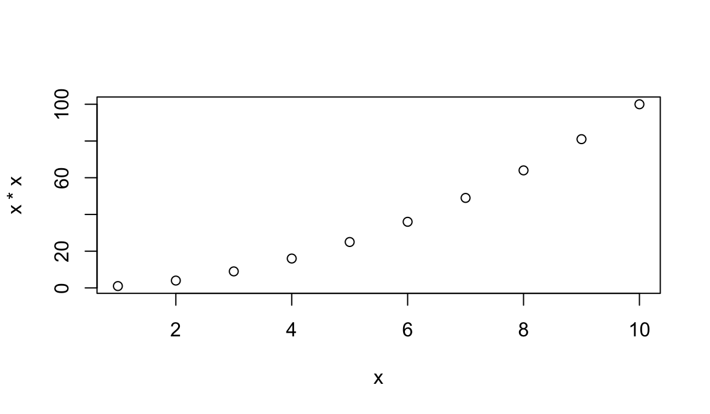

1 Starting out in R
R is both a programming language and an interactive environment for data exploration and statistics. Today we will be concentrating on R as an interactive environment.
Working with R is primarily text-based. The basic mode of use for R is that the user types in a command in the R language and presses enter, and then R computes and displays the result.
We will be working in RStudio. The easiest way to get started is to go to Posit Cloud and create a new project. Monash staff and students can log in using their Monash Google account.
The main way of working with R is the console, where you enter commands and view results. RStudio surrounds this with various conveniences. In addition to the console panel, RStudio provides panels containing:
- A text editor, where R commands can be recorded for future reference.
- A history of commands that have been typed on the console.
- An “environment” pane with a list of variables, which contain values that R has been told to save from previous commands.
- A file manager.
- Help on the functions available in R.
- A panel to show plots.
Open RStudio, click on the “Console” pane, type 1+1 and press enter. R displays the result of the calculation. In this document, we will show such an interaction with R as below.
1+1[1] 2+ is called an operator. R has the operators you would expect for mathematics: + - * / ^. It also has further operators that do other things.
* has higher precedence than +. We can use brackets if necessary ( ). Try 1+2*3 and (1+2)*3.
Spaces can be used to make code easier to read.
We can compare with == < > <= >= !=. This produces a logical value, TRUE or FALSE. Note the double equals, ==, for equality comparison.
2 * 2 == 4[1] TRUEThere are also character strings such as "string". A character string must be surrounded by either single or double quotes.
1.1 Variables
A variable is a name for a value. We can create a new variable by assigning a value to it using <-.
width <- 5RStudio helpfully shows us the variable in the “Environment” pane. We can also print it by typing the name of the variable and hitting enter. In general, R will print to the console any object returned by a function or operation unless we assign it to a variable.
width[1] 5Examples of valid variables names: hello, subject_id, subject.ID, x42. Spaces aren’t ok inside variable names. Dots (.) are ok in R, unlike in many other languages. Numbers are ok, except as the first character. Punctuation is not allowed, with two exceptions: _ and ..
We can do arithmetic with the variable:
# Area of a square
width * width[1] 25and even save the result in another variable:
# Save area in "area" variable
area <- width * widthWe can also change a variable’s value by assigning it a new value:
width <- 10
width[1] 10area[1] 25Notice that the value of area we calculated earlier hasn’t been updated. Assigning a new value to one variable does not change the values of other variables. This is different to a spreadsheet, but usual for programming languages.
1.2 Saving code in an R script
Once we’ve created a few variables, it becomes important to record how they were calculated so we can reproduce them later.
The usual workflow is to save your code in an R script (“.R file”). Go to “File/New File/R Script” to create a new R script. Code in your R script can be sent to the console by selecting it or placing the cursor on the correct line, and then pressing Control-Enter (Command-Enter on a Mac).
Tip
Add comments to code, using lines starting with the # character. This makes it easier for others to follow what the code is doing (and also for us the next time we come back to it).
1.3 Vectors
A vector of numbers is a collection of numbers. “Vector” means different things in different fields (mathematics, geometry, biology), but in R it is a fancy name for a collection of numbers. We call the individual numbers elements of the vector.
We can make vectors with c( ), for example c(1,2,3). c means “combine”. R is obsesssed with vectors, in R even single numbers are vectors of length one. Many things that can be done with a single number can also be done with a vector. For example arithmetic can be done on vectors as it can be on single numbers.
myvec <- c(10,20,30,40,50)
myvec[1] 10 20 30 40 50myvec + 1[1] 11 21 31 41 51myvec + myvec[1] 20 40 60 80 100length(myvec)[1] 5c(60, myvec)[1] 60 10 20 30 40 50c(myvec, myvec) [1] 10 20 30 40 50 10 20 30 40 50When we talk about the length of a vector, we are talking about the number of numbers in the vector.
1.4 Types of vector
We will also encounter vectors of character strings, for example "hello" or c("hello","world"). Also we will encounter “logical” vectors, which contain TRUE and FALSE values. R also has “factors”, which are categorical vectors, and behave much like character vectors (think the factors in an experiment).
Because vectors can only contain one type of thing, when you mix different types R will choose a lowest common denominator type of vector, a type that can contain everything we are trying to put in it. A different language might stop with an error, but R tries to soldier on as best it can. A number can be represented as a character string, but a character string can not be represented as a number, so when we try to put both in the same vector R converts everything to a character string.
c("hello", 1, TRUE)[1] "hello" "1" "TRUE" 1.5 Indexing vectors
Access elements of a vector with [ ], for example myvec[1] to get the first element. You can also assign to a specific element of a vector.
myvec[1][1] 10myvec[2][1] 20myvec[2] <- 5
myvec[1] 10 5 30 40 50Can we use a vector to index another vector? Yes!
myind <- c(4,3,2)
myvec[myind][1] 40 30 5We could equivalently have written:
myvec[c(4,3,2)][1] 40 30 5Challenge: indexing
We can create and index character vectors as well. A cafe is using R to create their menu.
menu <- c("spam", "eggs", "beans", "bacon", "sausage")What does
menu[-3]produce? Based on what you find, use indexing to create a version ofmenuwithout"spam".Use indexing to create a vector containing spam, eggs, sausage, spam, and spam.
Add a new item, “lobster”, to
menu, and store the result in a variable callednew_menu.
1.6 Sequences
Another way to create a vector is with ::
1:10 [1] 1 2 3 4 5 6 7 8 9 10This can be useful when combined with indexing:
menu[1:4][1] "spam" "eggs" "beans" "bacon"Sequences are useful for other things, such as a starting point for calculations:
x <- 1:10
x*x [1] 1 4 9 16 25 36 49 64 81 100plot(x, x*x)
1.7 Functions
Functions are the things that do all the work for us in R: calculate, manipulate data, read and write to files, produce plots. R has many built in functions and we will also be loading more specialized functions from “packages”.
We’ve already seen several functions: c( ), length( ), and plot( ). Let’s now have a look at sum( ).
sum(myvec)[1] 135We called the function sum with the argument myvec, and it returned the value 135. We can get help on how to use sum with:
?sumSome functions take more than one argument. Let’s look at the function rep, which means “repeat”, and which can take a variety of different arguments. In the simplest case, it takes a value and the number of times to repeat that value.
rep(42, 10) [1] 42 42 42 42 42 42 42 42 42 42As with many functions in R—which is obsessed with vectors—the thing to be repeated can be a vector with multiple elements.
rep(c(1,2,3), 10) [1] 1 2 3 1 2 3 1 2 3 1 2 3 1 2 3 1 2 3 1 2 3 1 2 3 1 2 3 1 2 3So far we have used positional arguments, where R determines which argument is which by the order in which they are given. We can also give arguments by name. For example, the above is equivalent to
rep(c(1,2,3), times=10) [1] 1 2 3 1 2 3 1 2 3 1 2 3 1 2 3 1 2 3 1 2 3 1 2 3 1 2 3 1 2 3rep(x=c(1,2,3), 10) [1] 1 2 3 1 2 3 1 2 3 1 2 3 1 2 3 1 2 3 1 2 3 1 2 3 1 2 3 1 2 3rep(times=10, x=c(1,2,3)) [1] 1 2 3 1 2 3 1 2 3 1 2 3 1 2 3 1 2 3 1 2 3 1 2 3 1 2 3 1 2 3Arguments can have default values, and a function may have many different possible arguments that make it do obscure things. For example, rep can also take an argument each=. It’s typical for a function to be invoked with some number of positional arguments, which are always given, plus some less commonly used arguments, typically given by name.
rep(c(1,2,3), each=3)[1] 1 1 1 2 2 2 3 3 3rep(c(1,2,3), each=3, times=5) [1] 1 1 1 2 2 2 3 3 3 1 1 1 2 2 2 3 3 3 1 1 1 2 2 2 3 3 3 1 1 1 2 2 2 3 3 3 1 1
[39] 1 2 2 2 3 3 3Earlier we used : to create sequences. The seq function gives you extra flexibility.
seq(2, 10, by=2)[1] 2 4 6 8 10Check the documentation with ?seq for further arguments.